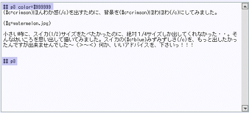
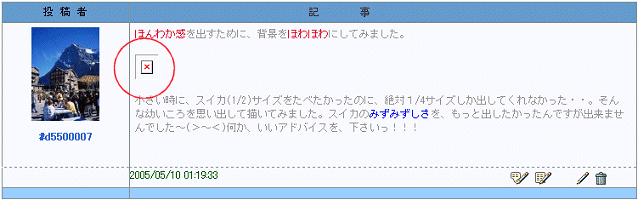
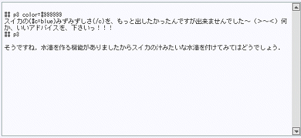
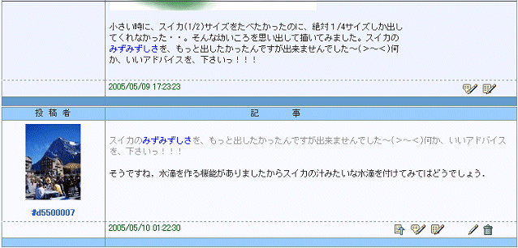
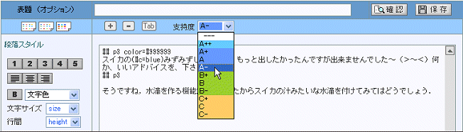
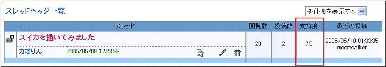

|
ここでは，スレッドヘッダを引用していましたので，エディタの中にあらかじめその本文が書き込まれています．青い網掛けで示したＰＭＬは自動的に付加されるもので，"## p3 color=#999999" は文字を薄い灰色で表示するという段落の指定です．また，その下の"## p3" はノーマルな段落を定義するもので，投稿文はこの下に書きます．これらＰＭＬや引用文は不要ならば削除して構いません．
なお，これ以降の投稿文の作成方法は「スレッドヘッダを投稿する」と同じです．詳細はそちらを参照してください．

ところで引用文をそのままプレビューで見ると，画像が表示できないというマークがでます．これはスレッドヘッダの中の画像を持っていないわけですから当然です．

引用文にある画像表示のＰＭＬは一般には下図のように普通は削除してください．

上のようにすると，実際の投稿文は以下のようになります．下段の方が投稿文です．

なお，教師から支持がある場合は支持度を入力することができます．支持度は誰がどれくらいの支持度を入力したかは表示されません．常に全体の平均値が表示されます．

支持度はスレッドヘッダ一覧画面に平均値として表示されます．

|
|
 レスポンス投稿の手順
レスポンス投稿の手順
 スレッドヘッダ一覧で，投稿したいスレッドヘッダのタイトルをクリックする
スレッドヘッダ一覧で，投稿したいスレッドヘッダのタイトルをクリックする
 投稿ボタンをクリックする
投稿ボタンをクリックする
 投稿文を作成する
投稿文を作成する
 エディタを開いてこの投稿文を再編集する
エディタを開いてこの投稿文を再編集する
 この投稿文を削除する
この投稿文を削除する